Utilizando em dispositivos móveis
O Beluga Talks é bastante simples de utilizar. Após abrir o aplicativo, a pessoa deverá escrever o que deseja comunicar, e em seguida clicar na opção "Falar", representada pelo ícone de alto-falante. Ao clicar nesta opção, a ferramenta irá vocalizar a palavra ou frase digitada. A imagem a seguir mostra a localização da opção Falar.
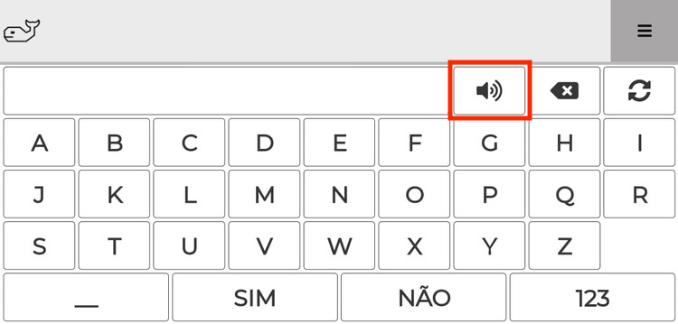
A tecla "Apagar", localizada ao lado da tecla "Falar", apaga o último caractere digitado. No exemplo da próxima imagem, ao clicar em "Apagar", a letra "E" seria apagada da palavra "ACESSIBILIDADE".
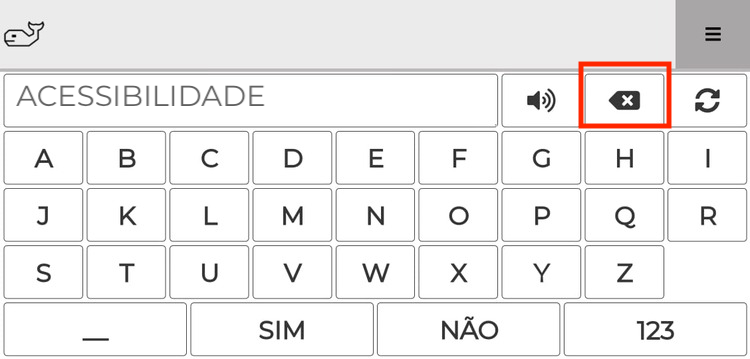
A tecla "Limpar", localizada ao lado da tecla "Apagar", apaga tudo que a pessoa escreveu, e não apenas o último caractere. No exemplo a seguir, toda a frase “ESTOU COM FOME” seria apagada ao clicar na tecla "Limpar".
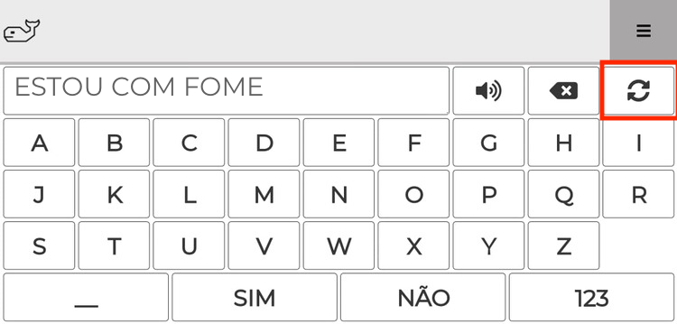
Na parte inferior da Prancha, há a tecla "Espaço", representada por um traço horizontal. Ao lado, há também as teclas correspondentes às palavras "Sim" e "Não". Por serem palavras de uso frequente, optou-se por transformá-las em teclas, de modo que a pessoa não precise digitá-las toda vez que desejar falar sim ou não.
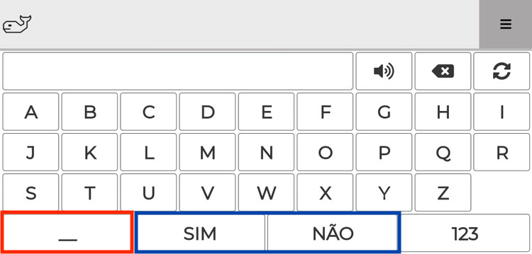
Ao lado das teclas de "Sim" e "Não", há a tecla "123". Ao clicar nela, será aberta a prancha numérica, como mostram as próximas imagens.
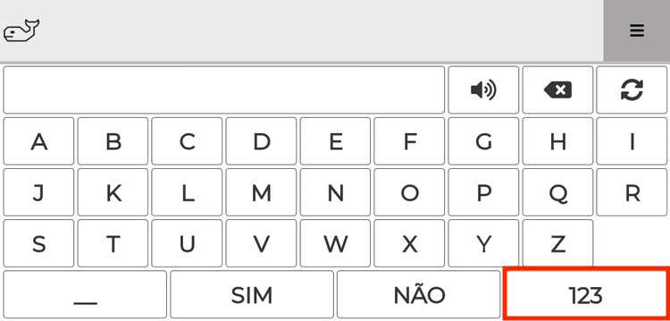
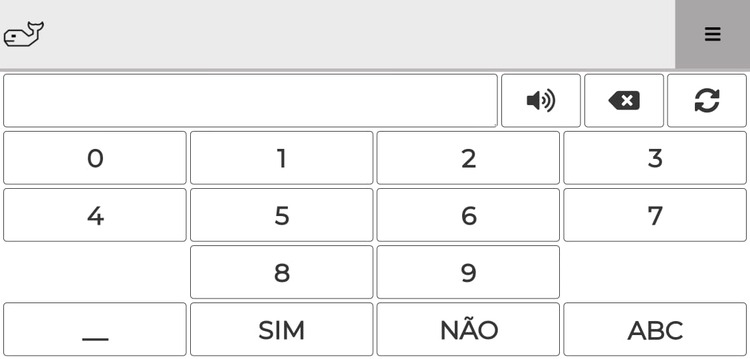
Para retornar à prancha alfabética, toque na tecla "ABC", localizada no canto inferior direito da tela (na mesma posição de onde ficava a tecla "123".
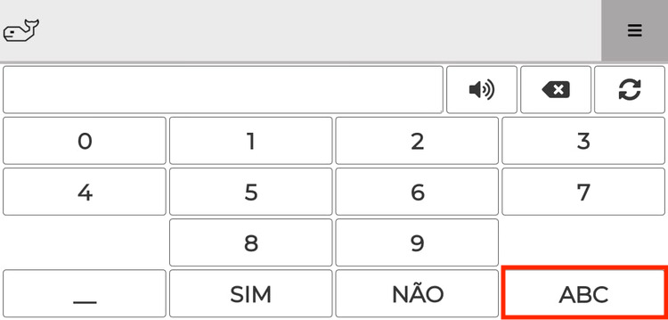
A Prancha Alfanumérica conta ainda com três recursos de acessibilidade: Modo Escuro, Varredura e Velocidade da Varredura. Esses recursos podem ser acessados clicando-se no ícone de "menu" localizado na parte superior direita do aplicativo.
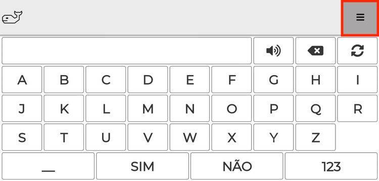
Ao clicar no ícone de "menu", será aberta uma barra contendo os três recursos do aplicativo, conforme mostrado na imagem a seguir.
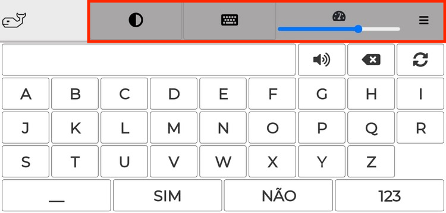
O primeiro ícone é o "Modo Escuro", representado por um círculo pintado metade de preto e metade de branco. O "Modo Escuro" inverte o esquema de cores, fazendo com que o fundo fique preto e os caracteres fiquem brancos. A próxima imagem mostra a prancha alfabética do Beluga Talks com o "Modo Escuro ligado".
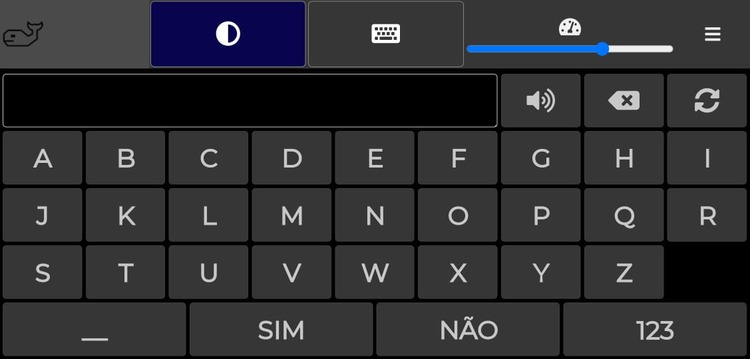
O segundo ícone é a "Varredura", representada por um teclado de computador. A opção "Varredura" pode ser utilizada por pessoas que tenham dificuldade de escolher as teclas com precisão no dispositivo móvel, ou em manusear o mouse convencional no computador. Ao ligar a "Varredura", a ferramenta irá passar por todo o teclado, em grupos de 3 teclas por vez. Quando o grupo que contém tecla que você quer escolher estiver em foco, toque na tela para que a varredura comece alternar entre as teclas do grupo selecionado. Quando a tecla desejada estiver em foco, toque na tela para que seja acionada a tecla escolhida. Em seguida a varredura reiniciará automaticamente.
Por exemplo, se desejarmos escrever a palavra "Comer", precisamos esperar que a varredura chegue ao grupo de teclas que contém a primeira letra da palavra; no caso em questão, a letra "C". A letra "C" encontra-se no grupo "A,B e C". Quando este grupo estiver em foco, devemos tocar a tela para que a varredura comece a alternar entre as três letras do grupo, até que uma delas seja selecionada por meio de um novo toque na tela. Esse processo deve se repetir até que todas as letras da palavra tenham sido escritas. As imagens a seguir exemplificam a seleção da letra "C" por meio da varredura.
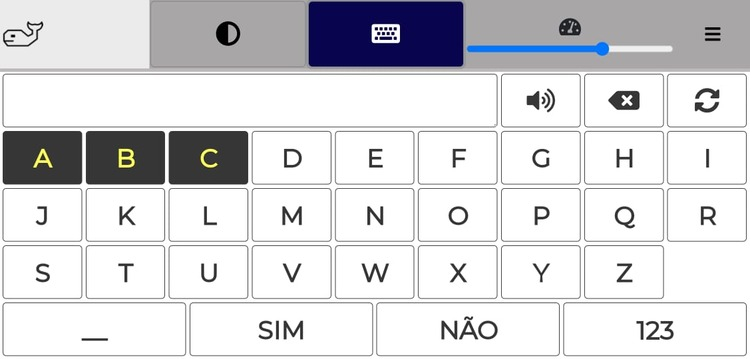
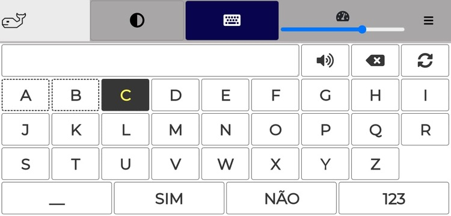
É possível alterar a "Velocidade da Varredura", ou seja, o tempo que a ferramenta leva para alternar entre os grupos de teclas, ou entre as teclas de um grupo quando selecionado. Essa opção é o terceiro ícone da barra de configurações, representado pelo desenho de um velocímetro. Por padrão, a velocidade está configurada para 70%, mas o usuário pode aumentar ou diminuir esse valor conforme suas necessidades. No exemplo a seguir, a velocidade da varredura foi configurada para 30%, de modo que a ferramenta demore mais tempo para alternar entre as opções.
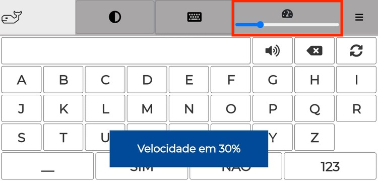